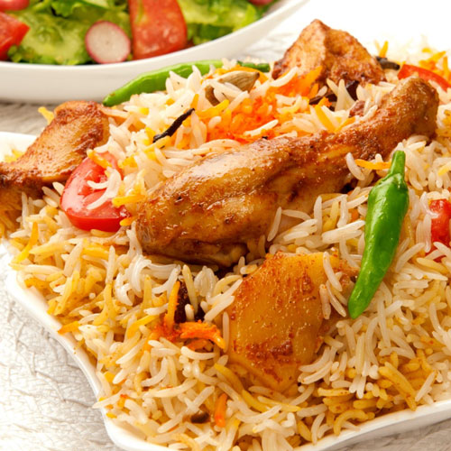

Chicken Biryani

What is not to love about this chicken biryani recipe? The fragrant aromas, the vibrant colours, and the fluffy rice are all bound together by the zing of heat and spices. Even beginners will fall in love with this chicken biryani recipe.One of the best things about biryani is that even the leftovers taste great! This makes it especially great for families who do not have the time (or energy!) to cook every day.
Ingredients
- 100 ml Olive Oil
- 2 Bay Leaf
- 1 tsp Peppercorn
- 5 Inch Cinnamon
- 1 tsp Cloves Laung
- 3 Black Cardamom
- 10 Green Cardamoms
- 1 kg Chicken
- 2 Onions
- 3 Tomatoes
- 2 tsp Garlic Paste
- 2 tsp Ginger Paste
- 2 tsp Garam Masala
- 2 tsp Chilli Powder
- 1 tsp Black Pepper
- 2 tsp Turmeric Powder Haldi
- 1 tsp Salt
- 4 Potatoes
- 100 g Yoghurt
- 1 tsp Cumin Powder Jeera
- 4 Green Chillies
- Onions Fried
- 1 handful Coriander
- 500 g Rice Basmati
Instructions
- Rinse the rice in cold water then leave to soak and set aside
- In a large saucepan bring a pot of water to a boil then drain the rice and add to the pan before giving it a stir to spread the rice in the pan
- Allow the rice to gently simmer for 12-15 minutes until 80% cooked – at this point the rice grains should have expanded but they will still be relatively hard
- As the rice is cooking in a large pan heat up the oil on medium heat until hot
- Add the bay leaves, black peppercorns, cinnamon, cloves, black cardamom, and green cardamoms then sauté the whole spices for 1 minutes until fragrant
- Reduce the heat to medium and add the chicken, the finely diced onions and the chopped tomatoes then cook for 3-4 minutes until the onions are soft and translucent in colour
- Add the ginger paste, garlic paste, garam masala, chilli powder, black pepper, turmeric powder, and salt then cook the spices for 5-7 minutes
- As the spices are cooking peel the potatoes and cut into bite-size chunks then add into pan and cook for 10-15 minutes
- Add the yoghurt and stir immediately to prevent it from curdling then cook for 10-15 minutes
- Add the cumin seeds, green chillies, fried onions, and coriander then mix
- Drain the parboiled rice and layer on top of the chicken masala followed by some fried onions and finely chopped fresh coriander
- Cover with a lid then reduce the heat to low and allow to cook for 10-12 minutes
- Remove the lid and gently mix the chicken masala and rice together – ensure that you mix slowly to not mush the rice
- Serve immediately on its own or alongside some raita!